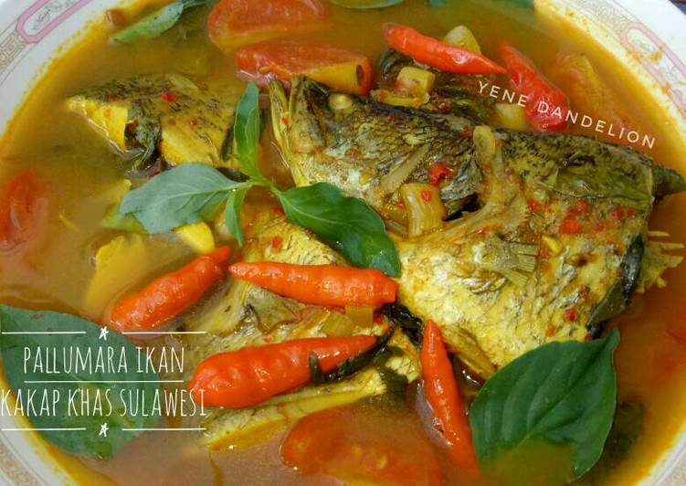

Bahan |
Cara buat
Pallumara

Bahan:
- 500 gr ikan layang (boleh ikan apa saja)
- 1 1/2 sdm asam jawa
- 1/2 sdm kunyit bubuk
- 1 sdm garam
- 1 1/2sdm gula pasir
- 1 liter air
Cara membuat:
- Bersihkan ikan, lalu lumuri jeruk nipis, diamkan 10-15 menit.
- Cuci bersih dan masukkan dalam panci.
- Larutkan asam jawa dalam air, saring, dan tuang ke dalam panci berisi ikan.
- Tambahkan kunyit bubuk, aduk rata.
- Masak ikan sampai mendidih, masukkan gula garam, tes rasa, angkat.
- Sajikan dengan racak mangga.
Kembali ke atas